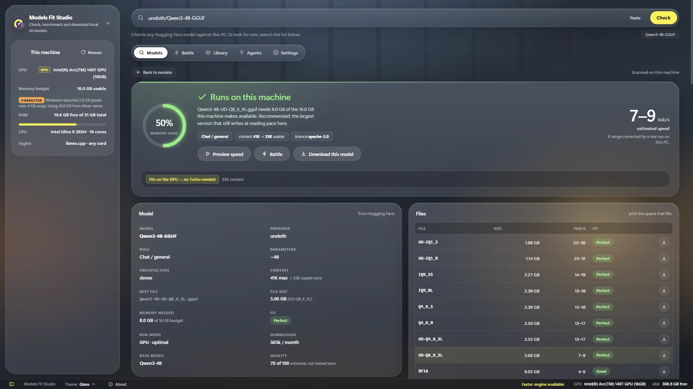

01
Paste a model link, press Check
Paste any Hugging Face link or name, like unsloth/Qwen3-4B-GGUF. The app reads your CPU, RAM and graphics chip and answers for this PC.
- A clear verdict: runs, tight, slower, or won't fit
- Memory needed and the expected speed range
- The file to download, picked for you
